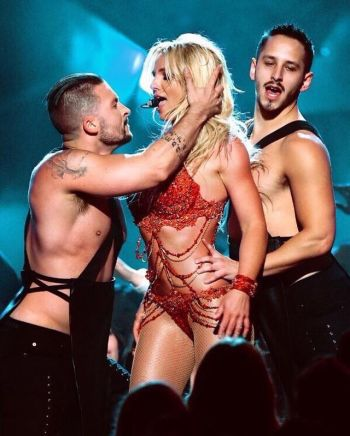

Pop music is a genre of popular music that originated in its modern form in the Western world during the 1950s and 1960s, deriving from rock and roll. The terms "popular music" and "pop music" are often used interchangeably, although the former describes all music that is popular (and can include any style).
Pop music is eclectic, and often borrows elements from other styles such as urban, dance, rock, Latin, and country; nonetheless, there are core elements that define pop music. Identifying factors include generally short to medium-length songs written in a basic format (often the verse-chorus structure) as well as the common employment of repeated choruses, melodic tunes, and hooks.
Definitions:
David Hatch and Stephen Millward define pop music as "a body of music which is distinguishable from popular, jazz, and folk musics". According to Pete Seeger, pop music is "professional music which draws upon both folk music and fine arts music". Although pop music is seen as just the singles charts, it is not the sum of all chart music. The music charts contain songs from a variety of sources, including classical, jazz, rock, and novelty songs. Pop music, as a genre, is seen as existing and developing separately. Thus "pop music" may be used to describe a distinct genre, aimed at a youth market, often characterized as a softer alternative to rock and roll.
Characteristics:
According to British musicologist Simon Frith, characteristics of pop music include an aim of appealing to a general audience, rather than to a particular sub-culture or ideology, and an emphasis on craftsmanship rather than formal "artistic" qualities. Music scholar Timothy Warner said it typically has an emphasis on recording, production, and technology, rather than live performance; a tendency to reflect existing trends rather than progressive developments; and aims to encourage dancing or uses dance-oriented rhythms.
The main medium of pop music is the song, often between two and a half and three and a half minutes in length, generally marked by a consistent and noticeable rhythmic element, a mainstream style and a simple traditional structure. Common variants include the verse-chorus form and the thirty-two-bar form, with a focus on melodies and catchy hooks, and a chorus that contrasts melodically, rhythmically and harmonically with the verse. The beat and the melodies tend to be simple, with limited harmonic accompaniment. The lyrics of modern pop songs typically focus on simple themes – often love and romantic relationships – although there are notable exceptions.
Harmony and chord progressions in pop music are often "that of classical European tonality, only more simple-minded." Clichés include the barbershop quartet-style harmony (i.e. moving from a secondary dominant harmony to a dominant harmony, and then to the tonic) and blues scale-influenced harmony. There was a lessening of the influence of traditional views of the circle of fifths between the mid-1950s and the late 1970s, including less predominance for the dominant function.
A study in 2012 that examined over 464,000 recordings of popular music recorded since 1955 found "three important trends in the evolution of musical discourse: the restriction of pitch sequences (with metrics showing less variety in pitch progressions), the homogenization of the timbral palette [tone colour] (with frequent timbres becoming more frequent), and growing average loudness levels (threatening a dynamic richness [changes in volume] that has been conserved until today)." It was reported that the study "seems to support the popular anecdotal observation that pop music of yore was better, or at least more varied, than today’s top-40 stuff."
A-ha (stylized as a-ha) are a Norwegian band formed in Oslo in 1982. The band was founded by Morten Harket (vocals), Magne Furuholmen (keyboards) and Pål Waaktaar-Savoy (guitars). The group initially rose to fame during the mid-1980s after being discovered by musician and producer John Ratcliff, and had continued global success in the 1990s and 2000s.
A-ha achieved their biggest success with their debut album, Hunting High and Low, in 1985. That album peaked at number 1 in their native Norway, number 2 in the UK, and number 15 on the US Billboard album chart; yielded two international number-one singles, "Take On Me" and "The Sun Always Shines on TV"; and earned the band a Grammy Award nomination as Best New Artist. In the UK, Hunting High and Low continued its chart success into the following year, becoming one of the best-selling albums of 1986. In 1994, after their fifth studio album, Memorial Beach, failed to achieve the commercial success of their previous albums, the band went on a hiatus.
Following a performance at the Nobel Peace Prize Concert in 1998, the band returned to the studio and recorded their sixth album, 2000's Minor Earth Major Sky, which was another number-one hit in Norway and resulted in a new tour. A seventh studio album, Lifelines, was released in 2002, and an eighth album, Analogue, in 2005, was certified Silver in the UK – their most successful album there since 1990's East of the Sun, West of the Moon. Their ninth album, Foot of the Mountain, was first released on 19 June 2009 and returned the band to the UK Top 5 for the first time since 1988, being certified Silver there and Platinum in Germany. The album peaked at number 2 in Norway (their first release not to reach number 1 in their home territory). On 15 October 2009, the band announced they would split after a worldwide tour in 2010, the Ending on a High Note Tour. Thousands of fans from at least 40 different countries on six continents congregated to see A-ha for the last leg of the tour. On 4 December 2014 A-ha officially announced its participation at Rock In Rio 2015 which celebrated 30 years for both the band and the event. A-HA were listed (and so still) in the Guinness World Records book in 1991 for 'The biggest paying audiences'; they shocked the international entertainment press by drawing such incredible big audience, an audience of 198.000 at Rio's Maracanã Stadium. Morten Harket was listed (and so still) in the Guinness World Records book in 2001 for 'The longest live note holding'; he held a note in 'Summer moved on', a song by his a-ha, for 22 seconds. In 2015 it was announced that A-ha would re-unite for two years. Their tenth studio album, Cast in Steel, was released on 4 September 2015. A tour "Cast in Steel Tour" in support of the album happened in autumn 2015 and March–May 2016.
The band has sold more than 100 million records worldwide (till 2009 - till their 9th album 'Foot of the mountain'). In less than a year, during 2010, the band earned an estimated 500 million Norwegian Kroner from concert tickets, merchandise and the release of a greatest hits album, making them one of the 40–50 largest grossing bands in the world.
Personnel:
• Morten Harket – lead vocals, guitars
• Magne Furuholmen – keyboards, guitars, backing vocals
• Pål Waaktaar-Savoy – guitars, backing vocals
Discography, Studio albums:
• Hunting High and Low (1985)
• Scoundrel Days (1986)
• Stay on These Roads (1988)
• East of the Sun, West of the Moon (1990)
• Memorial Beach (1993)
• Minor Earth Major Sky (2000)
• Lifelines (2002)
• Analogue (2005)
• Foot of the Mountain (2009)
• Cast in Steel (2015)
ABBA were a Swedish pop group formed in Stockholm in 1972 by members Agnetha Fältskog, Björn Ulvaeus, Benny Andersson, and Anni-Frid Lyngstad. They became one of the most commercially successful acts in the history of popular music, topping the charts worldwide from 1974 to 1982. ABBA won the Eurovision Song Contest 1974 at The Dome in Brighton, UK, giving Sweden its first triumph in the contest, and are the most successful group ever to take part in the competition.
ABBA's record sales figure is uncertain and various estimates range from over 140 to over 500 million sold records. This makes them one of the best-selling music artists. ABBA was the first group from a non-English-speaking country to achieve consistent success in the charts of English-speaking countries, including the UK, Ireland, Canada, Australia, New Zealand, South Africa, and on a lesser scale, the U.S. The group also enjoyed significant success in Latin American markets, and recorded a collection of their hit songs in Spanish.
During the band's active years, Fältskog & Ulvaeus and Lyngstad & Andersson were married. At the height of their popularity, both relationships were suffering strain which ultimately resulted in the collapse of the Ulvaeus–Fältskog marriage in 1979 and the Andersson–Lyngstad marriage in 1981. These relationship changes were reflected in the group's music, with later compositions featuring more introspective and dark lyrics in contrast to their usual pure-pop sound.
After ABBA disbanded in December 1982, Andersson and Ulvaeus achieved success writing music for the stage, while Lyngstad and Fältskog pursued solo careers with mixed success. ABBA's music declined in popularity until the purchase of ABBAs catalogue and record company Polar by Polygram in 1989 enabled the groundwork to be laid for an international re-issue of all their original material and a new Greatest Hits (ABBA Gold) collection in the Autumn of 1992 which became a worldwide smash. Several films, notably Muriel's Wedding (1994) and The Adventures of Priscilla, Queen of the Desert (1994), further revived public interest in the group and the spawning of several tribute bands. In 1999, ABBA's music was adapted into the successful musical Mamma Mia! that toured worldwide. A film of the same name, released in 2008, became the highest-grossing film in the United Kingdom that year.
ABBA were honoured at the 50th anniversary celebration of the Eurovision Song Contest in 2005, when their hit "Waterloo" was chosen as the best song in the competition's history. The group was inducted into the Rock and Roll Hall of Fame in 2010.
• Ring Ring (1973)
• Waterloo (1974)
• ABBA (1975)
• Arrival (1976)
• The Album (1977)
• Voulez-Vous (1979)
• Super Trouper (1980)
• The Visitors (1981)
Céline Marie Claudette Dion, CC OQ ChLD (born 30 March 1968) is a Canadian singer and businesswoman. Born into a large family from Charlemagne, Quebec, Dion emerged as a teen star in the French-speaking world after her manager and future husband René Angélil mortgaged his home to finance her first record. Dion first gained international recognition in the 1980s by winning both the 1982 Yamaha World Popular Song Festival and the 1988 Eurovision Song Contest where she represented Switzerland. Following a series of French albums during the 1980s, she signed on to Epic Records in the United States. In 1990, Dion released her debut English-language album, Unison, establishing herself as a viable pop artist in North America and other English-speaking areas of the world.
During the 1990s, with the help of Angélil, she achieved worldwide fame after releasing several English albums along with additional French albums. Her albums, Falling into You (1996) and Let's Talk About Love (1997), were both certified diamond in the US while D'eux (1995) became the best-selling French-language album of all time. She also scored a series of international number-one hits, including "Nothing Broken but My Heart", "The Power of Love", "Think Twice", "Because You Loved Me", "It's All Coming Back to Me Now", "My Heart Will Go On", and "I'm Your Angel." However, in 1999 at the height of her success, Dion announced a hiatus from entertainment to start a family and spend time with her husband, who had been diagnosed with cancer. She returned to the top of pop music in 2002 and signed to perform nightly in A New Day... (2003–07), a five-star theatrical show at the Colosseum at Caesars Palace, on the Las Vegas Strip in Paradise, Nevada. It became the most successful residency show of all time, grossing US $385 million.
Dion's music has been influenced by genres ranging from rock and R&B to gospel and classical. Her recordings are mainly in French and English, although she also sings in Spanish, Italian, German, Latin, Japanese, and Mandarin Chinese. While her releases have often received mixed critical reception, she is regarded as one of pop music's most influential voices. Dion has won five Grammy Awards, including Album of the Year and Record of the Year. She is the second best-selling female artist in the US during the Nielsen SoundScan era. In 2003, Dion was honoured by the International Federation of the Phonographic Industry (IFPI) for selling over 50 million albums in Europe. Dion remains the best-selling Canadian artist and one of the best-selling artists of all time with record sales of over 200 million copies worldwide.
Andrey Viktorovich Gubin (Russian: Андрей Викторович Губин, real surname Klementyev (Клементьев)) (born 30 April 1974 in Ufa) is a Russian pop-singer, poet, composer, and record producer.
Igor Yevgenyevich Kornelyuk (Russian: Игорь Евгеньевич Корнелюк), born on November 16, 1962 in Brest (Belarus), is a Soviet and Russian musician, singer and composer.
Discography:
• 1988 – Bilyet na Balyet (A ticket to the ballet)
• 1990 – Podozhdi (Wait)
• 1994 – Ya ne mogu tak zhit (I can not live like this)
• 1994 – Moy lyubimye pesni (My favorite songs)
• 1998 – Privyet, a eto Kornelyuk! (Hi, this is Kornelyuk!)
• 2003 – Banditskiy Peterburg (Gangsters of Petersburg - soundtrack)
• 2010 – Pesni iz kino (Songs from the movie)
• 2010 – Taras Bulba (Taras Bulba - soundtrack)
• 2010 – Master i Margarita (The Master and Margarita - soundtrack)
La Oreja de Van Gogh (English: Van Gogh's Ear, literally The Ear of Van Gogh) are a Latin Grammy-winning and Grammy-nominated Spanish pop band from Donostia-San Sebastian, Spain. The name of the band refers to the famous post-impressionist painter Vincent van Gogh who cut off the lobe of his own ear. Their characteristically poetic songs (both lyrics and music) are written mainly by band members Pablo Benegas, Xabi San Martín and (until she left) Amaia Montero. The themes of their songs typically include love, friendship and relationships. Since their debut, they have sold more than 8 million albums worldwide.
In November 2007, lead singer Amaia Montero announced that she would be leaving the group to begin a solo career. Her replacement, Leire Martínez, was announced in July 2008; the first single featuring the new singer, "El Último Vals" (The Last Waltz), was released at the same time. The album from which the single was taken, A las cinco en el Astoria, followed in September 2008. Leire was discovered on the Spanish reality show Factor X.
Diskography, Studio Albums:
• Dile al sol (1998)
• El viaje de Copperpot (2000)
• Lo que te conté mientras te hacías la dormida (2003)
• Rarezas (2004)
• París (2003)
• La Oreja de Van Gogh: en directo (2004)
• Guapa (2006)
• Caja LOVG (2006), 1 DVD: Gira 2003; 5 CDs: Dile al sol, El viaje de Copperpot, Lo que te conté mientras te hacías la dormida, La Oreja de Van Gogh: en directo, Bonus
• Más guapa (2006)
• Guapa (2007) (Italien)
• LOVG - grandes éxitos (2008)
• A las cinco en el Astoria (2008)
• Nuestra casa a la izquierda del tiempo (2009)
• Cometas por el cielo (2011)
• Plan B (2013)
• Primera fila (Live, 2013)
Татьяна Николаевна Овсиенко (род. 22 октября 1966, Киев, Украинская ССР, СССР) — советская и российская певица. Одна из солисток группы «Мираж» (1988—1990), известна благодаря своей сольной карьере.
Заслуженная артистка Российской Федерации (2001).
Britney Jean Spears (born December 2, 1981) is an American singer, dancer and actress. Born in McComb, Mississippi, and raised in Kentwood, Louisiana, she performed acting roles in stage productions and television shows as a child before signing with Jive Records in 1997. Spears's first and second studio albums, ...Baby One More Time (1999) and Oops!... I Did It Again (2000), became international successes, with the former becoming the best-selling album by a teenage solo artist. Title tracks "...Baby One More Time" and "Oops!... I Did It Again" broke international sales records. In 2001, Spears released her self-titled third studio album, Britney, and played the starring role in the film Crossroads (2002). She assumed creative control of her fourth studio album, In the Zone (2003), which yielded the worldwide success of the "Toxic" single.
In 2007, Spears's much-publicized personal issues sent her career into hiatus. Her fifth studio album, Blackout, was released later that year, and spawned hits such as "Gimme More" and "Piece of Me". Her erratic behavior and hospitalizations continued through the following year, at which point she was placed under a still ongoing conservatorship. Spears's sixth studio album, Circus (2008), included global chart-topping lead single "Womanizer". Her seventh studio album, Femme Fatale (2011), became her first to yield three top-ten singles in the United States. She released her eighth studio album Britney Jean in 2013. Later that year, Spears began the four-year residency show, Britney: Piece of Me, at The AXIS at Planet Hollywood Resort & Casino in Las Vegas.
Spears is regarded as a pop icon and credited with influencing the revival of teen pop during the late 1990s. She became the 'best-selling teenage artist of all time' and garnered honorific titles including the "Princess of Pop". Her work has earned her numerous awards and accolades, including a Grammy Award, six MTV Video Music Awards including the Lifetime Achievement Award, ten Billboard Music Awards including the Billboard Millennium Award and a star on the Hollywood Walk of Fame. In 2009, Billboard ranked her as the 8th overall Artist of the Decade, and also recognized her as the best-selling female artist of the 2000s, as well as the fifth overall. The Recording Industry Association of America (RIAA) lists Spears as the eighth top-selling female artist in the United States, with 34 million certified albums. She has sold 100 million albums worldwide and over 100 million singles. making her one of the best-selling music artists of all time. According to Billboard Spears has sold about 22.38 million singles in digital downloads in US and is the fourth best-selling female artist since Nielsen SoundScan began.
Rolling Stone recognized her instant success as one of the Top 25 Teen Idol Breakout Moments of all time, while VH1 ranked her eleventh on their "100 Greatest Women in Music" list in 2012, and Billboard named her the sexiest woman in music. Forbes reported that Spears was the highest paid female musician of 2012, with earnings of $58 million, having last topped the list in 2002. 
Discography, Studio Albums:
• …Baby One More Time (1999)
• Oops!… I Did It Again (2000)
• Britney (2001)
• In the Zone (2003)
• Blackout (2007)
• Circus (2008)
• Femme Fatale (2011)
• Britney Jean (2013)
• TBA (2016).
Anzhelika Varum (Russian: Анжелика Варум), real name Maria Yuriyevna Varum (Russian: Мари́я Ю́рьевна Вару́м), born on 26 May 1969, is a Russian singer and actress, and an Honored Artist of the Russian Federation. She released 12 albums, starting with "Good bye, moi mal'chik" (Good-bye, my boy) in 1991. More than 60 of her songs became hits, receiving heavy radio play. She is married to the Russian singer Leonid Agutin. They have a daughter, Elisaveta. Meritorious Artist of Russia (2011).